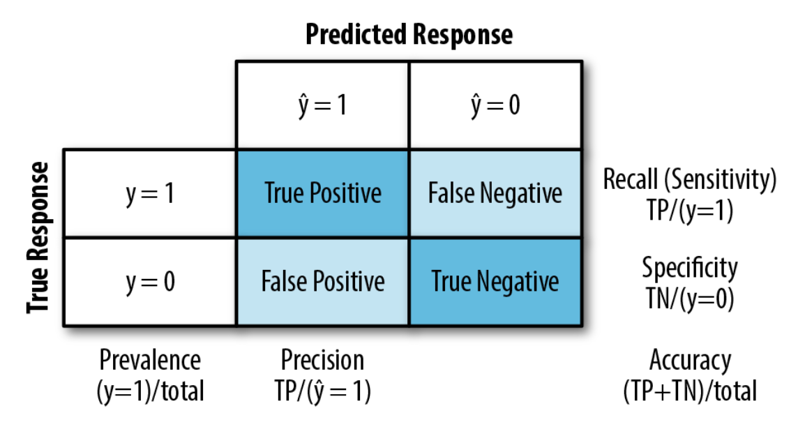
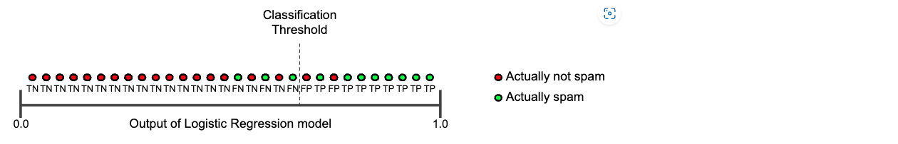
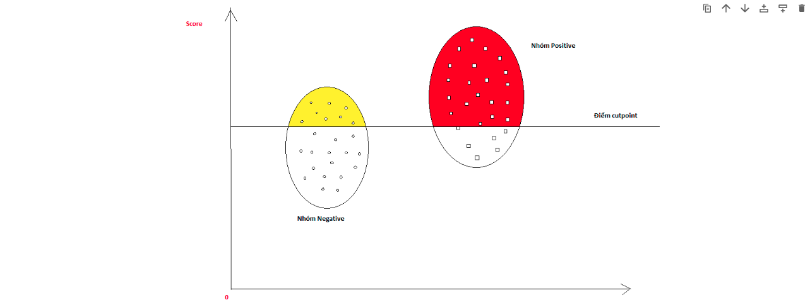
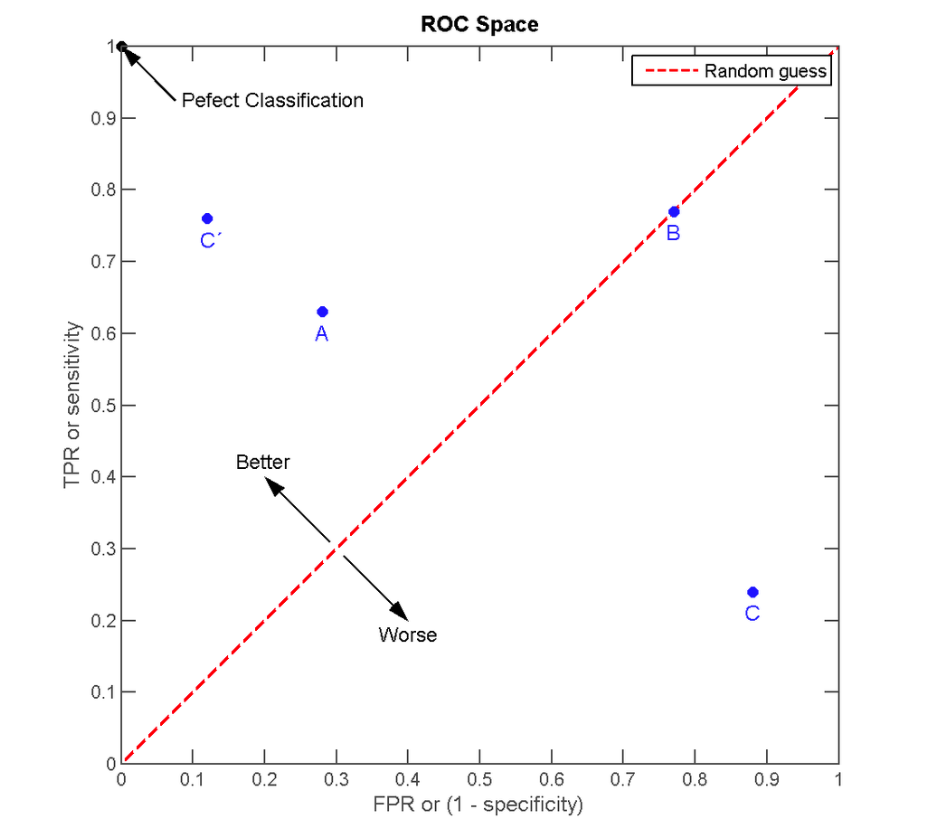
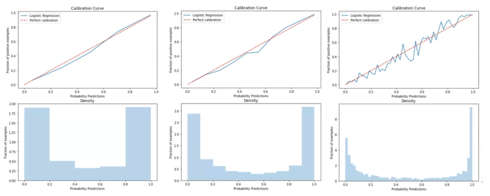
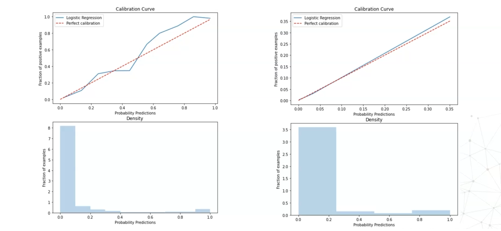
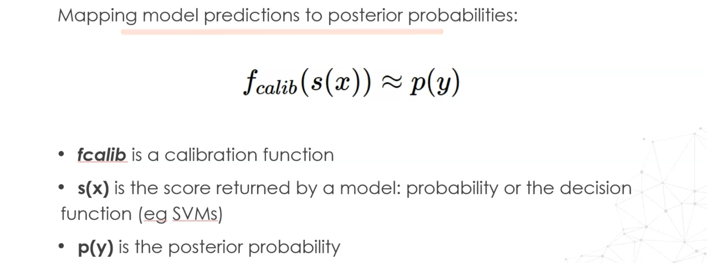
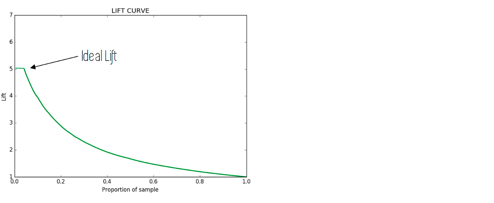

5.2. Classification metrics#
Average for multi-class:
Micro: Collective average of TP, FP anf FN.Weighed: Takes the average of each metric weighted by the support.Macro: Take the average of the individual metrics
# data
from sklearn.datasets import load_breast_cancer, make_classification
from sklearn.model_selection import train_test_split
# X, y = load_breast_cancer(return_X_y = True)
X, y = make_classification(n_samples=1000, n_features=8, n_informative=3)
X_train, X_test, y_train, y_test = train_test_split(X, y)
X_train.shape, X_test.shape
((750, 8), (250, 8))
# random forest
from sklearn.linear_model import LogisticRegression
import numpy as np
lr = LogisticRegression()
lr.fit(X_train, y_train)
y_train_pred_p = lr.predict_proba(X_train)[:,1]
y_test_pred_p = lr.predict_proba(X_test)[:,1]
y_train_pred = lr.predict(X_train)
y_test_pred = lr.predict(X_test)
# Baseline prediction: predict the majority class
y_train_base = pd.Series(np.zeros(len(y_train)))
y_test_base = pd.Series(np.zeros(len(y_test)))
5.2.1. Confusion matrix#
Lấy ví dụ một bài toán phân loại nhị phân có bảng chéo thống kê kết quả giữa thực tế và dự báo như sau: 
TP (True Positive): Tổng số trường hợp dự báo khớp Positive.
TN (True Negative): Tổng số trường hợp dự báo khớp Negative.
FP (False Positive): Tổng số trường hợp dự báo các quan sát thuộc nhãn Negative thành Positive. Những sai lầm của False Positive tương ứng với sai lầm loại I (type I error), chấp nhận một điều sai. Thực tế cho thấy sai lầm loại I thường gây hậu quả nghiêm trọng hơn so với sai lầm loại II được tìm hiểu bên dưới.
FN (False Negative): Tổng số trường hợp dự báo các quan sát thuộc nhãn Positive thành Negative. Trong trường hợp này chúng ta mắc sai lầm loại II (type II error), bác bỏ một điều đúng.
from sklearn.metrics import confusion_matrix, ConfusionMatrixDisplay
def plot_cm(y_test, y_test_pred, labels = None):
cm = confusion_matrix(y_test, y_test_pred)
ConfusionMatrixDisplay(confusion_matrix=cm, display_labels=labels).plot()
plt.grid(False)
from sklearn.metrics import confusion_matrix, ConfusionMatrixDisplay
"""
TN | FP
FN | TP
"""
cm = confusion_matrix(y_test, y_test_pred)
ConfusionMatrixDisplay(confusion_matrix=cm, display_labels=data.target_names).plot()
plt.grid(False)
5.2.1.1. multilabel CM#
ConfusionMatrix list in which each element is the CM of each class prediction with all the other label
samplewisefor regression, analysis would involve looking at the performance of the model for each sampleclasswisefor classification, analysis would involve looking at the performance of the model for each class separately
from sklearn.metrics import multilabel_confusion_matrix
y_true = ["cat", "ant", "cat", "ant", "cat", "ant", "ant", "bird", "cat", "cat", "cat", "cat", "ant", "ant", "bird"]
y_pred = ["ant", "ant", "cat", "ant", "ant", "bird", "cat", "ant", "ant", "ant", "bird", "cat", "cat", "ant", "ant"]
cm = multilabel_confusion_matrix(y_true, y_pred, labels=["ant", "bird", "cat"])
cm
# ConfusionMatrixDisplay(confusion_matrix=cm, display_labels=["ant", "bird", "cat"]).plot()
array([[[ 3, 6],
[ 3, 3]],
[[11, 2],
[ 2, 0]],
[[ 6, 2],
[ 5, 2]]])
import matplotlib.pyplot as plt
cm = confusion_matrix(y_true, y_pred)
dis = ConfusionMatrixDisplay(confusion_matrix=cm, display_labels=["ant", "bird", "cat"]).plot(cmap = 'Blues')
plt.grid(False)
import scikitplot as skplt
skplt.metrics.plot_confusion_matrix(y_true, y_pred, normalize=False)
<AxesSubplot: title={'center': 'Confusion Matrix'}, xlabel='Predicted label', ylabel='True label'>
5.2.2. Accuracy#
Đối với bài toán phân loại thì ta quan tâm tới độ chính xác dự báo trên toàn bộ bộ dữ liệu là bao nhiêu? do đó thước đo phổ biến nhất là accuracy đo tỷ lệ dự báo chính xác all class trên tổng sample.
Trong tính huống mô hình bị mất cân bằng thì accuracy không còn là thước đo tốt nên được thay thế bằng precision, recall.
from sklearn.metrics import accuracy_score
print('accuarcy without model',accuracy_score(y_test, y_test_base))
print('accuarcy logistic model',accuracy_score(y_test, y_test_pred))
accuarcy without model 0.484
accuarcy logistic model 0.628
5.2.2.1. Top k accuracy score#
Xác định giá trị/tỷ lệ dự đoán đúng của k top labels được predict (rank bằng predicted score)
from sklearn.metrics import top_k_accuracy_score
top_k_accuracy_score(y_test, y_test_pred, k = 1)
0.628
5.2.3. Precision, Recall, Fscore#
5.2.3.1. Recall#
Quan tâm tới tỷ lệ dự báo chính xác positive trên tổng positive thực tế hay khả năng bắt P của model ngoài thực tế
Recallquan trọng khi muốn hạn chế FN (mô hình dự đoán là 0 (sai), thực tế là 1)
from sklearn.metrics import recall_score
recall_score(y_test, y_test_pred)
0.6434108527131783
5.2.3.1.1. Balance accuracy (mean recall)#
The balanced accuracy in binary and multiclass classification problems to deal with imbalanced datasets. It is defined as the average of recall obtained on each class.
from sklearn.metrics import balanced_accuracy_score
print('Balance accuarcy without model',balanced_accuracy_score(y_test, y_test_base))
print('Balance accuarcy logistic model',balanced_accuracy_score(y_test, y_test_pred))
Balance accuarcy without model 0.5
Balance accuarcy logistic model 0.6274905503235313
# adjust = True, random performance would score 0, while keeping perfect performance at a score of 1
print('Balance accuarcy without model',balanced_accuracy_score(y_test, y_test_base, adjusted=True))
print('Balance accuarcy logistic model',balanced_accuracy_score(y_test, y_test_pred, adjusted=True))
Balance accuarcy without model 0.0
Balance accuarcy logistic model 0.2549811006470626
5.2.3.1.2. Geometric mean recall#
Giá trị Sensitive trung bình nhân của các class: $\(Gmean = \sqrt[n]{\prod_{i = 1}^{n}Recall_i}\)$
Nếu classifier ko có khả năng dự đoán 1 class nào đó ngoài thực tế thì Gmean = 0
Nếu classifier có khả năng dự đoán tất cả các class ngoài thực tế thì Gmean = 1
from imblearn.metrics import geometric_mean_score
geometric_mean_score(y_test, y_test_pred)
0.6272885577763637
5.2.3.2. Precision#
Quan tâm tới tỷ lệ dự báo chính xác positive trên tổng số trường hợp được model dự báo là positive
Precisionquan trọng khi muốn hạn chế FP (mô hình dự đoán là 1 (sai), thực tế là 0)
from sklearn.metrics import precision_score
precision_score(y_test, y_test_pred)
0.6384615384615384
5.2.3.2.1. Average precision score#
Average precision summarizes a precision-recall curve as the weighted mean of precisions achieved at each threshold, with the increase in recall from the previous threshold used as the weight: $\(\mathbf{AP}=\sum_{n}(R_{n}-R_{n-1})P_{n}\)$
from sklearn.metrics import average_precision_score
# vs probability y test score
average_precision_score(y_test, y_test_pred_p)
0.7137483481553051
5.2.3.3. Support#
Support = Number of cases on each class
5.2.3.4. F beta score#
F1-score là trung bình điều hoà đại diện cho cả precision và recall, F1 score càng cao thì model càng tốt. Sử dụng
F1 scorekhi: $\(f_1 = \frac{2}{\frac{1}{\text{precision}} + \frac{1}{\text{recall}}}\)$Cần sự cân bằng giữa precision và recall
Data bị imbalance giữa 0 và 1
Nếu precision tăng nhẹ làm recall giảm mạnh hoặc ngược lại thì dẫn tới F1-score sẽ rất thấp
Fbeta-score \(f_{\beta}\) là trường hợp tổng quát hơn của \(f_1\) khi ta coi mức độ quan trọng của
recallbằng \(\beta^2\) lầnprecision.
lựa chọn
f-scoremetric để đánh giá model với imbalance data và kết hợp được đánh giáprecisionandrecallVới bài toán phân loại khách hành
good/bad, tránh phân loại khách hàngBADthànhGoodhơn làGoodthànhBad, do đó ưu tiênRecall, giả sửRecallưu tiên gấp 5 lầnPrecision, tứcB^2 = 5Nếu 𝛽 >1 (default = 2), ưu tiên recall
Nếu 𝛽 <1 (default = 0.5), ưu tiên precision
# f1 score
from sklearn.metrics import f1_score
f1_score(y_test, y_test_pred)
0.6409266409266409
# f beta score
from sklearn.metrics import fbeta_score
fbeta_score(y_test, y_test_pred, beta = np.sqrt(5) )
0.6425806451612903
5.2.3.5. Probability & Precision_recall_curve#

Đường cong precision, recall giúp lựa chọn ngưỡng xác suất phù hợp để mang lại độ chính xác cao hơn cho precision hoặc recall.
precision cho ta biết tỷ lệ dự báo chính xác trong số các hồ sơ được dự báo là
BAD(tức nhãn là 1 Positive).recall đo lường tỷ lệ dự báo chính xác các hồ sơ thực tế là
BAD.
Luôn có sự đánh đổi giữa 2 tỷ lệ này, muốn model predict
BADtỷ lệ chính xác càng cao thì khả năngBADkhông được predict càng nhiều và ngược lại.Thông thường sẽ dựa trên kì vọng về precision hoặc recall (mục tiêu model) từ trước để lựa chọn ngưỡng
threshold.Với kì vọng tỷ lệ dự báo đúng hồ sơ
BADlà70%, chọnthresholdđể recall >= 70%.Hoặc kì vọng tỷ lệ dự báo đúng trong số các hồ sơ được dự báo là
BADlà 70%, chọnthresholdđể precision >= 70%.
Có sự đánh đổi giữa Recal và Precision:
Precision cao - recall thấp
Mô hình dự đoán có độ chính xác cao tuy nhiên khả năng bắt ngoài thực tế thấp, ưu tiên độ chính xác (hệ thống gợi ý sản phẩm tốt, tránh sản phẩm kém)
Không nên tin về dự đoán N, chỉ nên tin vào dự đoán P
Precision thấp - recall cao
Mô hình bắt được nhiều ngoài thực tế nhưng cũng bắt sai nhiều, ưu tiên bắt được càng nhiều P càng tốt, ví dụ như dự đoán ung thư (P), ko nên tin vào dự đoán P
from sklearn.metrics import precision_recall_curve, PrecisionRecallDisplay
# first find preciion and recall various at various thresholds
precision, recall, thresholds = precision_recall_curve(y_test, y_test_pred_p)
avg_precision = average_precision_score(y_test, y_test_pred_p)
# plot Precision by Recall
PrecisionRecallDisplay(precision, recall, average_precision= avg_precision).plot()
<sklearn.metrics._plot.precision_recall_curve.PrecisionRecallDisplay at 0x2873c1ff0>
def _plot_prec_rec_curve(prec, rec, thres):
plt.figure(figsize = (5, 4))
plt.plot(thres, prec[:-1], 'b--', label = 'Precision')
plt.plot(thres, rec[:-1], 'g-', label = 'Recall')
plt.xlabel('Threshold')
plt.ylabel('Probability')
plt.title('Precsion vs Recall Curve')
plt.legend()
_plot_prec_rec_curve(precision, recall, thresholds)
from yellowbrick.classifier import DiscriminationThreshold
visualizer = DiscriminationThreshold(lr,
n_trials=10,
cv=0.2,
fbeta=2.0,
argmax='fscore', # vi tri probability cut-point cho metrix dat max
is_fitted='auto',
exclude = "queue_rate",
quantiles=np.array([0.3, 0.5, 0.7]), # range median of curve in multi n trials
)
visualizer.fit(X_train, y_train)
visualizer.score(X_test, y_test) # Evaluate the model on the test data
visualizer.show()
/Users/khongdat/miniforge3/lib/python3.10/site-packages/IPython/core/pylabtools.py:152: UserWarning: Glyph 8 ) missing from current font.
fig.canvas.print_figure(bytes_io, **kw)
<AxesSubplot: title={'center': 'Threshold Plot for LogisticRegression'}, xlabel='discrimination threshold', ylabel='score'>
Thay đổi cutpoint probability (threshold) 
Ứng với mỗi giá trị Recall cao hơn là tỷ lệ False positive rate cao hơn. Khi các điểm cutpoint tăng dần thì tỷ lệ Recall giảm dần do ở mức điểm cao hơn thì số lượng được dự báo là positive có thể giảm trong khi số lượng positive thực tế không đổi -> Recall có thể giảm. Đồng thời tỷ lệ False positive rate tăng do mức điểm cao hơn thì số lượng dự báo là positive tăng -> số lượng được dự báo sai FP (Failse Positive) có thể tăng -> Tỷ lệ False positive rate tăng
5.2.3.6. Specificity#
Quan tâm tới khả năng bắt đúng N ngoài thực tế, ưu tiên bắt được càng nhiều N ngoài thực tế càng tốt
recall_score(y_test, y_test_pred, pos_label=0)
0.6115702479338843
5.2.3.7. NPV#
Quan tâm tới khả năng bắt đúng N dự đoán của mô hình.
precision_score(y_test, y_test_pred, pos_label=0)
0.6166666666666667
5.2.3.8. Classification Report#
# full report
from sklearn.metrics import precision_recall_fscore_support
# show cả label negative (trước) và positive (sau)
precision, recall, fscore, support =precision_recall_fscore_support(y_test, y_test_pred)
recall
array([0.61157025, 0.64341085])
recall.prod()**(1.0/len(recall))
0.6272885577763637
recall.mean()
0.6274905503235313
from sklearn.metrics import classification_report
print(classification_report(y_test, y_test_pred))
precision recall f1-score support
0 0.62 0.61 0.61 121
1 0.64 0.64 0.64 129
accuracy 0.63 250
macro avg 0.63 0.63 0.63 250
weighted avg 0.63 0.63 0.63 250
5.2.3.8.1. report for imbalance data#
from imblearn.metrics import classification_report_imbalanced
print(classification_report_imbalanced(y_test, y_test_pred))
pre rec spe f1 geo iba sup
0 0.62 0.61 0.64 0.61 0.63 0.39 121
1 0.64 0.64 0.61 0.64 0.63 0.39 129
avg / total 0.63 0.63 0.63 0.63 0.63 0.39 250
5.2.4. AUC, ROC, GINI#
Chỉ số AUC (area under curve) đo lường phần diện tích nằm dưới đường cong ROC cho biết khả năng phân loại của các hợp đồng GOOD/BAD của mô hình hồi qui logistic là mạnh hay yếu. AUC , giá trị của nó càng lớn thì mô hình càng tốt.
GINI= 2AUC- 1
5.2.4.1. ROC#
Thể hiện với từng điểm cut-point (điểm phân tách 0/1), thể hiện mối quan hệ giữa False Positive Rate (FRP = 1 - specificity) với Recall
X-axis: FPR = 1 - specificity
Y-axis: Recall

Một model có sức mạnh dự báo lớn hơn so với việc dự báo random khi nó có ROC nằm phía trên bên trái đường random line. Giá trị cutpoint tốt nhất để phân loại Positive và Negative cho model là điểm tiệm cận của đường thẳng song song với đường random line với ROC curve.
Note: ROC đặc trưng bằng việc thay đổi cutpoint phân lớp, khác với Lift curve đặc trưng bằng việc thay đổi tỷ lệ subsample của total data có mức độ highest probability positive
5.2.4.2. AUC#
Là phần diện tích phía dưới đường ROC, thể hiện độ hiệu quả của mô hình:
AUC = 1 thể hiện perfect model (Recall = 1, Specificity = 1): model dự đoán đúng tất cả Positive và không dự đoán sai Negative nào thành Positive.
AUC không phụ thuộc vào điểm cutpoint probability
from sklearn.metrics import roc_curve, auc, roc_auc_score, RocCurveDisplay
# tính FPR và recall cho từng cutpoint threshold
fpr, tpr, thres = roc_curve(y_test, y_test_pred_p)
# tính AUC from FPR và recall
auc(fpr, tpr)
0.7011980267794222
# tính AUC from y true và y prediction probability
roc_auc_score(y_test, y_test_pred_p)
0.7011980267794222
RocCurveDisplay.from_predictions(y_test, y_test_pred_p)
<sklearn.metrics._plot.roc_curve.RocCurveDisplay at 0x2938a3130>
# multi-class
skplt.metrics.plot_roc(y_test, lr.predict_proba(X_test))
<AxesSubplot: title={'center': 'ROC Curves'}, xlabel='False Positive Rate', ylabel='True Positive Rate'>
import plotly.express as px
def AUC_plot(y_test, y_test_pred_p):
fpr, tpr, thres = roc_curve(y_test, y_test_pred_p)
fig = px.area(
x=fpr, y=tpr,
title=f'ROC Curve (AUC={auc(fpr, tpr):.4f})',
labels=dict(x='False Positive Rate', y='True Positive Rate'),
width=700, height=500
)
fig.add_shape( type='line', line=dict(dash='dash'), x0=0, x1=1, y0=0, y1=1 )
fig.update_yaxes(scaleanchor="x", scaleratio=1)
fig.update_xaxes(constrain='domain')
return fig.show(renderer = 'jpeg')
AUC_plot(y_test, y_test_pred_p)
5.2.4.3. GINI#
Tỷ lệ Gini trên 60% tương ứng với một mô hình tốt
5.2.5. KS#
Là kiểm định thống kê non-parametric dùng để so sánh 2 phân phối, đánh giá mức độ tương đồng giữa chúng. Cụ thể với bài toán phân tách 0 và 1, đây là kiểm định đo lường sự khác biệt trong phân phối giữa 0 và 1 actual theo các tỷ lệ ngưỡng probability outcome. Nếu mô hình có khả năng phân loại 0 và 1 tốt thì đường cong phân phối xác suất tích lũy (cumulative distribution function - cdf) giữa 0 và 1 phải có sự tách biệt lớn. Trái lại, nếu mô hình rất yếu và kết quả dự báo của nó chỉ ngang bằng một phép lựa chọn ngẫu nhiên. Khi đó đường phân phối xác suất tích lũy của 0 và 1 sẽ nằm sát nhau.
Kiểm định
Kolmogorov-Smirnovsẽ kiểm tra giả thuyếtHolà hai phân phối xác suất 0 và 1 không có sự khác biệt. KhiP-value< 0.05 bác bỏ giả thuyếtHo.X-axis: ngưỡng probability outcome, hoặc binning theo hạng
Y-axis: cdf của phân phối 1 và 0
–> Khoảng cách xa nhất của 2 đường phân phối càng lớn thể hiện phân phối của 0 và 1 dựa theo score càng khác nhau, tức score có tính phân loại 0/1
# Kiểm định Kolmogorov-Smirnov test:
from scipy import stats
def _KS(y_test,y_pred_p, n_bins):
"""
Tính toán phân phối xác suất tích lũy của GOOD và BAD
"""
bucket, thresholds = pd.qcut(y_pred_p, q=n_bins, retbins=True)
cmd_BAD = []
cmd_GOOD = []
BAD_id = set(np.where(y_test == 1)[0])
GOOD_id = set(np.where(y_test == 0)[0])
total_BAD = len(BAD_id)
total_GOOD = len(GOOD_id)
for thres in thresholds:
pred_id = set(np.where(y_pred_p <= thres)[0])
# Đếm % số lượng hồ sơ BAD có xác suất dự báo nhỏ hơn hoặc bằng thres
per_BAD = len(pred_id.intersection(BAD_id))/total_BAD # thực tế là bad và dự báo là bad
cmd_BAD.append(per_BAD)
# Đếm % số lượng hồ sơ GOOD có xác suất dự báo nhỏ hơn hoặc bằng thres
per_GOOD = len(pred_id.intersection(GOOD_id))/total_GOOD # thực tế là good và dự báo là
cmd_GOOD.append(per_GOOD)
cmd_BAD = np.array(cmd_BAD)
cmd_GOOD = np.array(cmd_GOOD)
# print(bucket)
return cmd_BAD, cmd_GOOD, thresholds
# Biểu đồ phân phối xác suất tích lũy của GOOD và BAD
def _plot_KS(cmd_BAD, cmd_GOOD, thresholds):
"""
Biểu đồ phân phối xác suất tích lũy của GOOD và BAD
"""
pvalue = stats.ks_2samp(cmd_BAD, cmd_GOOD).pvalue
print('KS-score = {}'.format(max(abs(cmd_BAD-cmd_GOOD))), end = "| ")
print('p-value = {:.3f} (Below 0.05, significant)'.format(pvalue))
plt.figure(figsize = (5, 4))
plt.plot(thresholds, cmd_BAD, 'y-', label = 'BAD')
plt.plot(thresholds, cmd_GOOD, 'g-', label = 'GOOD')
plt.plot(thresholds, abs(cmd_BAD-cmd_GOOD), 'b--', label = 'DIFF')
plt.xlabel('% observation')
plt.ylabel('% GOOD/totalGOOD or BAD/totalBAD')
plt.title('Kolmogorov-Smirnov Curve')
plt.legend()
cmd_BAD, cmd_GOOD, thresholds = _KS( y_test,y_test_pred_p, n_bins=20)
_plot_KS(cmd_BAD, cmd_GOOD, thresholds)
KS-score = 0.2948299058235633| p-value = 0.365 (Below 0.05, significant)
skplt.metrics.plot_ks_statistic(y_test, lr.predict_proba(X_test))
<AxesSubplot: title={'center': 'KS Statistic Plot'}, xlabel='Threshold', ylabel='Percentage below threshold'>
5.2.6. Cohen’s kappa score#
\(\kappa\) thường được sử dụng để đo mức độ tương đồng ý kiến của 2 người cho N obs vào C nhóm labels không giao nhau đôi một.
Trong Classification, \(\kappa\) sử đụng để đánh giá accuracy của model prediction và thực tế của N obs cho C class cho Imbalance class (chỉ số
Accuracythông thường không hiệu quả trong dữ liệu bị imbalance) $\(\kappa = \frac{p_o-p_e}{1-p_e}\)$Trong đó:
\(p_o = \frac{\text{Số quan sát model predict đúng label}}{\text{Tổng sample}}\) là độ
accuracytiêu chuẩn của mô hình classìication\(p_e\) là xác suất cùng xảy ra 1 outcome (label) đồng thời của 2 event nếu coi việc phân loại theo model là 1 event. độc lập với event phân loại theo xác suất phân phối actual. \(p_e = \frac{\sum_{i=1}^{C}(n_{i1} \times n_{i2})}{N^{2}}\), trong đó \(n_{i1}\) là số lượng quan sát của người thứ nhất vote cho label thứ i, trong tổng số N quan sát và C labels
Trong bài toán Binary Classification: $\(\kappa={\frac{2\times(T P\times T N-F N\times F P)}{(T P+F P)\times(F P+T N)+(T P+F N)\times(F N+T N)}}\)$
Range của \(\kappa\) từ -1 đến 1:
Nếu \(\kappa < 0\): model có khả năng phân loại ngược lại với thực tế.
Nếu \(\kappa = 0\), tức model có \(\frac{TP}{FP} = \frac{FN}{TN} = \frac{TP + FN}{FP + TN} = \frac{ActualPositive}{ActualNegative}\) => Model chỉ có khả năng phân loại bằng với random guess
Nếu \(\kappa\) gần 1, model càng có khả năng phân loại tốt và khác với random guess
Nếu \(\kappa = 1\), tức chỉ số \(p_o\) =
accuracy= 1, tức model có độ chính xác tuyệt đối, phân loại hoàn toàn chính xác các obs vào các label
\(\kappa\) dealing with imbalance data
\(\kappa\) thể hiện hiệu quả về độ chính xác của mô hình hơn chỉ số
accuracykhi làm việc với imbalanced data trong bài toán classification, bằng việc lấyaccuracyloại bỏ thêm xác suất trùng label khi lấy random trong 2 event độc lập \(p_e\)Khi mức độ imbalance data càng lớn, thì \(p_e\) càng lớn (nếu cùng một độ
accuray\(p_o\)), khi đó làm \(\kappa\) càng nhỏ, thể hiện chính xác hơn về hiệu suất model (doaccuracykhông thay đổi)
from sklearn.metrics import cohen_kappa_score
cohen_kappa_score(y_test, y_test_pred)
0.2550464594681192
5.2.7. Class likelihood ratios#
Thể hiện mức độ dự đoán của model trên tập test positive và test negative.
The positive likelihood ratio ranges from 1 to infinity, giá trị càng cao tức là khả năng dự đoán P càng tốt trên tập
true positiveso vớitrue negative$\(L R_{+}=\frac{\mathrm{PR}(P+|T+)}{\mathrm{PR}(P+|T-)}\)$The negative likelihood ratio ranges from 0 to 1, giá trị càng thấp càng tốt. $\(L R_{-}=\frac{\mathrm{PR}(P-|T+)}{\mathrm{PR}(P-|T-)}\)$
The notation here refers to predicted \(P\) or true \(T\) label and the sign \(+\) and \(-\) refer to the positive and negative class, respectively, e.g. \(P+\) stands for “predicted positive”. \(PR\) is probability
from sklearn.metrics import class_likelihood_ratios
class_likelihood_ratios(y_test, y_test_pred)
(8.625, 0.046875)
5.2.8. Calibration curve#
1. Probability Calibration
Ứng với các mô hình ngoài việc dự đoán label thì còn predict xác suất của từng class (
predict_proba), thì model có well-calibrated khi predicted probability mathches với xác suất thực tế của event đó (Probabilities match the true likelihood of events)Ví dụ: trong model binary classifier, nếu prob threshold để xác định class 1 là 0.4 và tương ứng với threshold 0.4 đó có 60% quan sát dự đoán là 1 và 40% quan sát dự đoán là 0, thì xác suất dự đoán của model là well-calibrated.
Uncalibrated Probabilities thường xuất hiện trong các model ko train bằng probabilitistic framework hoặc dữ liệu bị imbalance, skewed distribution, hoặc biases in training data. Trong imbalance/ skewed distribution/ bias dataset, model thường dự đoán trung bình với xác suất cao hơn cho majority class.
ML algorithms có calibrated probabilities, bởi vì dự đoán dự trên probabilities framework (ví dụ maximun likelihood estimation):
Logistic Regression
Linear discriminant analysis
(and some others not well) Artificial Neural Networks, SVM, Decision Tree, Ensembles of Decision Trees (bagging, random forest, gradient boosting), Knn, Naive Bayes.
Why should care about uncalibrated probability ?
If just classify the label (not nescessarily to care about uncalibrated)
If looking up for probability of prediction (need to care), importance with the confident of this prediction of label –> should calibrated probability (if any) in ML algorithms (except: logistic, LDA)
2. Calibration curve
Chart thể hiện tỷ lệ số lượng Positive có match với xác suất X = Positve của model dự đoán hay ko ?:
x-axis(mean_predicted_value): Xác suất trung bình của các positive obs trong từng bin xác suất (xác suất P(1|X)predict_proba)y-axis(fraction_of_positives): tỷ trọng % số lượng Positive obs in this bin sample in x-axis
Nếu model dự báo xác suất tốt, the curve sẽ gần với diagonal line là perfect calibration, the predicted probabilities đáng tin cậy so với phân phối tỷ lệ positive class
-Number of observation in each bin probability
Nếu trong một bin có ít obs, thì giá trị fraction_of_positives/mean_predicted_value tại bin đó có thể bị bias, dẫn tới việc đánh giá sai mức độ calibrated probability của mô hình. Cụ thể, nếu số lượng obs quá thấp, không thể đánh giá được là probability có well-calibrated hay không, ngay cả trên curve thể hiện là under/over calibrated. Do đó cần phải lựa chọn số lượng bin phù hợp:
Nếu có quá nhiều bin , dẫn tới số lượng obs tại một số bin bị ít, đường Calibration curve noise
Nếu có quá ít bin , đường Calibration curve bị quá fit với diagonal line

Trong dữ liệu Imbalance, do dữ liệu bị mất cân bằng (Class 1 ít quan sát) nên thường các bin tại vùng xác suất cao có sô lượng obs thấp. It is very hard to say if the probability is calibrated, because there are few obs of positive class.

from sklearn.calibration import CalibrationDisplay
CalibrationDisplay.from_predictions(y_test, y_test_pred_p)
<sklearn.calibration.CalibrationDisplay at 0x297ecbd60>
5.2.8.1. On imbalance dataset#
Các kỹ thuật sử lý dữ liệu imbalance như Under/Over sampling hoặc Cost Sensitive learning sẽ distort the relationship giữa predicted probability và the fraction of positive obs ==> Need to re-calibrate the probability
Calibrating a Classifier : mapping model predictions to posterior probabilities  By the way, note that probability calibration works on any ranked scores, not just on probabilities. So for example, in the support vector classifier case, seeing how expensive probabilities are to generate, we may choose instead to use “distance from the nearest support vector” as our score.
Should perform the calibration on the testset or use
cross-validationif little dataset. Not calibrate on trainset, lead to overfitting Technical re-calibrated methos :
Platt Scaling (parametric approach) New probability after scaling by logistic transformation: $\(P(y=1 \: | \: x_i) = \frac{1}{1 + \exp{(Af(x_i) + B)}}\)$ In which:
\(f(x_i)\) be the probability assigned to the record \(x_i\) by the classifier
\(A\) and \(B\) are scaling parameters, to be determined at fitting time (using some kind of maximum likelihood estimation algorithm), which control how the scaling is applied, solves for the smallest difference between the mean probability and the true probability within each bin.
Platt scaling áp dụng logistic transformation cho prediction probability trong đó có error theo dạng sigmoid shape (ví dụ như SVM hay random forest,…) lam smooth các xác suất thành 1 linear distribution, tạo thành xác suất gần hơn với perfect calibration.
Isotonic Regression(non-parametric approach)
Isotonic regression is a regression algorithm which fits a piecewise constant, non-decreasing function to a distribution of data. Thuật toán Isotonic dự đoán constant theo từng phần/step, nhóm data thành từng phần constant với mục tiêu là tối thiểu sai lệch giữa Y dự đoán và thực tế. Here is an example of a fitted isotonic regression result:

The goal of Isotonic Regression in re-calibration procedure (minimize cumulative neighborhood probability error) is the same with Platt Scaling
import numpy as np
import pandas as pd
import matplotlib.pyplot as plt
# load cancer dataset
from sklearn.datasets import load_breast_cancer
from sklearn.model_selection import train_test_split
# load data
# only a few observations to speed the computaton
data = pd.read_csv('Datasets/kdd2004.csv').reset_index(drop=True)
data.drop(data[(data.target==0) & (data.index<135000)].index, inplace = True)
# separate dataset into train and test
X_train, X_test, y_train, y_test = train_test_split(
data.drop(labels=['target'], axis=1), # drop the target
data['target'], # just the target
test_size=0.3,
random_state=0, stratify=data['target'])
print(X_train.shape, X_test.shape)
y_train.value_counts().plot(kind= 'pie')
(8371, 74) (3588, 74)
<AxesSubplot: ylabel='target'>
def compare_calibrated_curve(estimator, X_train, X_test, y_train, y_test):
fig, ax = plt.subplots(1, figsize=(12, 6))
ax.plot([0, 1], [0, 1], '--', color='gray')
# Uncalibrated
estimator.fit(X_train, y_train)
y_test_predict_proba = estimator.predict_proba(X_test)[:, 1]
fraction_of_positives, mean_predicted_value = calibration_curve(y_test, y_test_predict_proba, n_bins=10)
ax.plot(mean_predicted_value, fraction_of_positives, 's-', label='Uncalibrated')
# Isotonic calibration
estimator_isotonic = CalibratedClassifierCV(estimator, cv=5, method='isotonic')
estimator_isotonic.fit(X_train, y_train)
prob_isotonic = estimator_isotonic.predict_proba(X_test)[:, 1]
fraction_of_positives, mean_predicted_value = calibration_curve(y_test, prob_isotonic, n_bins=10)
ax.plot(mean_predicted_value, fraction_of_positives, 's-', color='red', label='Calibrated (Isotonic)')
# Sigmoid calibration / Platt Scaling
estimator_sigmoid = CalibratedClassifierCV(estimator, cv=5, method='sigmoid')
estimator_sigmoid.fit(X_train, y_train)
prob_sigmoid = estimator_sigmoid.predict_proba(X_test)[:, 1]
fraction_of_positives, mean_predicted_value = calibration_curve(y_test, prob_sigmoid, n_bins=10)
ax.plot(mean_predicted_value, fraction_of_positives, 's-', color='orange', label='Calibrated (Platt)')
plt.gca().legend()
# raw imbalance dataa
from sklearn.calibration import CalibratedClassifierCV,calibration_curve
from sklearn.ensemble import RandomForestClassifier
clf = RandomForestClassifier()
compare_calibrated_curve(clf, X_train, X_test, y_train, y_test)
# apply cost sensitive to handle imbalance data
clf = RandomForestClassifier(class_weight={0:1, 1:8})
compare_calibrated_curve(clf, X_train, X_test, y_train, y_test)
<matplotlib.legend.Legend at 0x2922cacb0>
# Undersampling
from imblearn.under_sampling import RandomUnderSampler
rus = RandomUnderSampler(
sampling_strategy='auto', # samples only from majority class
random_state=0, # for reproducibility
replacement=True # if it should resample with replacement
)
X_rus, y_rus = rus.fit_resample(X_train, y_train)
print(y_rus.value_counts())
clf = RandomForestClassifier()
compare_calibrated_curve(clf, X_rus, X_test, y_rus, y_test)
0 907
1 907
Name: target, dtype: int64
# oversampling - Borderline SMOTE
from imblearn.over_sampling import BorderlineSMOTE
sm_b1 = BorderlineSMOTE(
sampling_strategy='auto', # samples only the minority class
random_state=0, # for reproducibility
k_neighbors=5,
m_neighbors=10,
kind='borderline-1',
)
X_sm, y_sm = sm_b1.fit_resample(X_train, y_train)
print(y_sm.value_counts())
clf = RandomForestClassifier()
compare_calibrated_curve(clf, X_sm, X_test, y_sm, y_test)
/Users/khongdat/miniforge3/lib/python3.10/site-packages/imblearn/over_sampling/_smote/filter.py:192: FutureWarning: The parameter `n_jobs` has been deprecated in 0.10 and will be removed in 0.12. You can pass an nearest neighbors estimator where `n_jobs` is already set instead.
warnings.warn(
0 7464
1 7464
Name: target, dtype: int64
5.2.8.2. Brier score#
The Brier Score measures the fit of the probability estimates of the observed data or the accuracy of probabilistic estimates. It is given by the average squared difference of the true label and the predicted probability.
Brier Score = mean( \((y - y_pred_prob)^2\) )
Brier Score is small when the proba estimates are close to th real class (phân phối xác suất của predict_proba tập trung tại 0 và 1, binary classification), and it increase as they diverge.
Brier Score tend to work well with balanced data, not accurate when imbalanced dataset (because the effect of minority class obs does not affter the overall score
For balance dataset, Brier Score is bigger, suggesting that its probabilities are not as well calibrated
from sklearn.metrics import brier_score_loss
brier_score_loss(y_test, y_test_pred_p)
5.2.9. Lift and Gain#
5.2.9.1. Lift curve#
Với m là số outcome có highest probability (gần label 1 nhất), ví dụ m chạy từ subsample 1% –> 100% (step = 1%)
Với mỗi subsample có highest Probability Positive, Lift thể hiện subsample dự đoán đúng P gấp bao nhiêu lần so với totalsample
Lift curve đặc trưng bằng việc thay đổi tỷ lệ subsample của total data có mức độ highest probability positive để ứng với tỷ lệ đúng positive mong muốn gấp bao nhiêu lần so với total data, khác với ROC là thay đổi cutpoint cho xác suất để xác định P or N.

# multi-class
skplt.metrics.plot_lift_curve(y_test, lr.predict_proba(X_test))
<AxesSubplot: title={'center': 'Lift Curve'}, xlabel='Percentage of sample', ylabel='Lift'>
5.2.9.2. Gain curve#
Với m là số outcome có highest probability (gần label 1 nhất), ví dụ m chạy từ subsample 1% –> 100% (step = 1%)
với mỗi subsample có highest Probability Positive, Gain curve thể hiện subsample gain được bao nhiều % TP của total sample (khi proportion sample = 1 thì tương đương với việc sử dụng total sample)
Gain curve đặc trưng bằng việc thay đổi tỷ lệ subsample của total data có mức độ gain bao nhiêu %TP so với TP của total sample, khác với ROC là thay đổi cutpoint cho xác suất để xác định P or N.
skplt.metrics.plot_cumulative_gain(y_test, lr.predict_proba(X_test))
<AxesSubplot: title={'center': 'Cumulative Gains Curve'}, xlabel='Percentage of sample', ylabel='Gain'>
Đường bold-line tương ứng với random select subsample, còn đường gain-line tương ứng với việc có order và select theo highest probability outcome. Y-axis thể hiện gain được bao nhiêu % TP của total sample
5.2.10. Loss function & others#
5.2.10.1. Index of Imbalanced Accuracy#
Balance any scoring function using the IBA to wraps this function to dealing with imbalance data.
if
Square=False: IBA Function = Function * (1 + alpha * (Recall - Specificity) )if
Square=True: IBA Function = Function^2 * (1 + alpha * (Recall - Specificity) )
from imblearn.metrics import make_index_balanced_accuracy as iba
from sklearn.metrics import accuracy_score
accuracy_score_iba = iba(alpha=0.1, squared=True)(accuracy_score)
print(accuracy_score(y_test, y_test_pred))
print(accuracy_score_iba(y_test, y_test_pred))
0.628
0.3956397425075277
((recall[1]-recall[0])/10+1)* accuracy_score(y_test, y_test_pred)**2
0.3956397425075277
5.2.10.2. Log loss#
from sklearn.metrics import log_loss
log_loss(y_test, y_test_pred_p)
0.617197431425657
5.2.10.3. Zero-one loss#
# updating
5.2.10.4. Hamming loss#
# updating
5.2.10.5. Jaccard#
# updating
5.2.10.6. Matthews correlation#
# updating